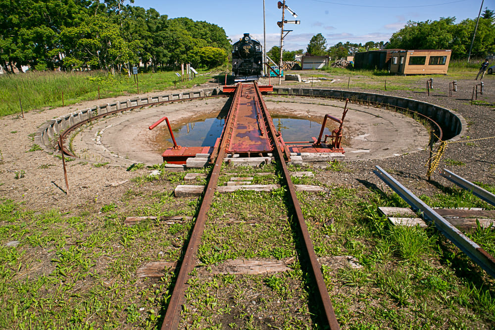

明治時代半ば以降、天然魚に頼った鮭漁は、次第に資源が枯渇していきました。西欧諸国と
肩を並べようと国を挙げて邁進する政府にとって日本の東門の安定と発展は不可欠であり、
鮭漁を補う新たな産業の確立が求められました。現在、根室海峡で水揚げされるホッカイシマエビや
昆布などの多彩な水産品は、鮭の不漁に直面した漁業者が、ここで生きるために始めた漁の姿といえます。
また野付で目にする「海辺の牛舎跡」は、漁業者が漁の傍ら、副業として畜産農業を行った、
かつての半農半漁の暮らしの名残です。
酪農業は大正末期以降、根釧(こんせん)台地内陸部に拡がり、全国から集まった開拓者の手で
一大産業へと成長しました。別海の「旧奥行臼駅逓所」や標津の「旧根室標津駅転車台」など、
根釧台地の内陸交通遺産は、持続可能な産業の確立を目指し、海から大地へと展開した先人たちの、
内陸の「道」の歴史をいまに伝えています。いま根室海峡沿岸で目にする数々の一次産業は、
半世紀に及ぶ鮭不漁の中、人々が日々の暮らしをつなぎ、当地の発展を夢みて臨んだ、新たな挑戦の結晶なのです。

標津線の終着駅・標津駅構内にあった転車台にはSLも保存されている